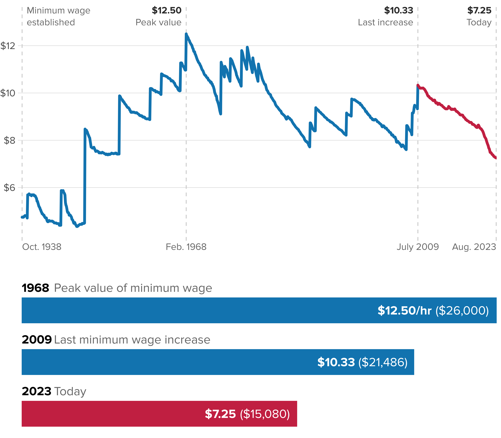

After the longest period in history without an increase, the federal minimum wage today is worth 27% less than 13 years ago–and 40% less than in 1968
Real value of the minimum wage (adjusted for inflation)

All values in June 2022 dollars, adjusted using the CPI-U in 2022 chained to the CPI-U-RS (1978–2021) and CPI-U-X1 (1967–1977) and CPI-U (1966 and before). For the exact calculations, see https://github.com/Economic/real_minimum_wage